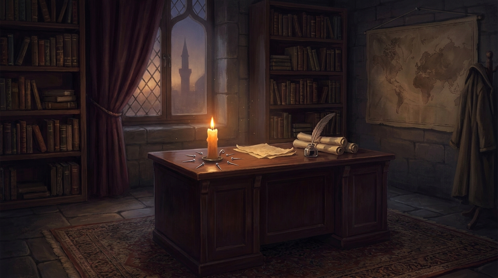
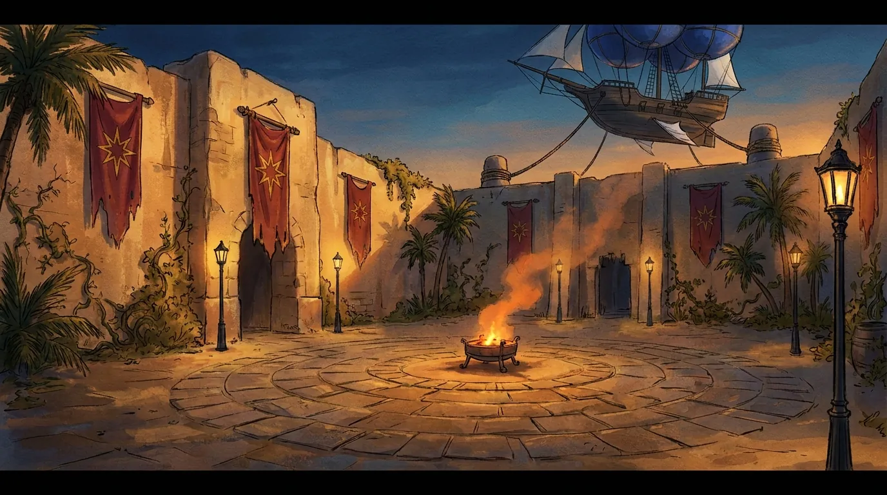
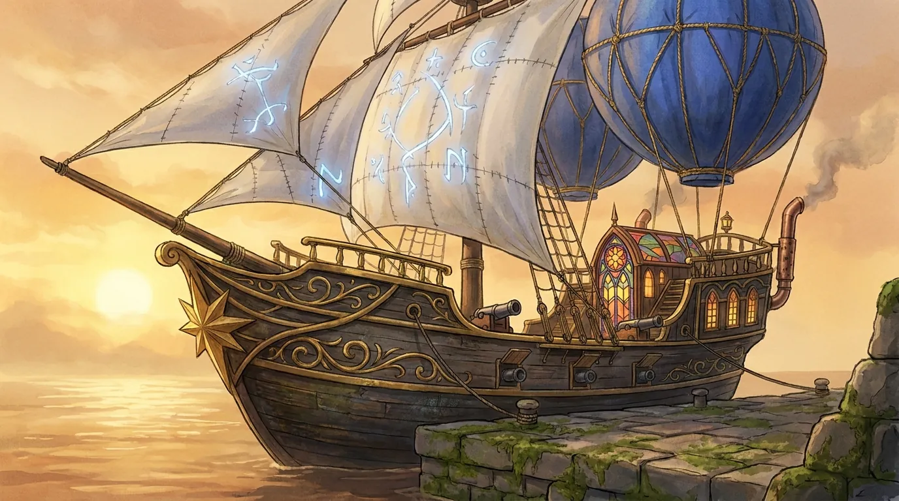
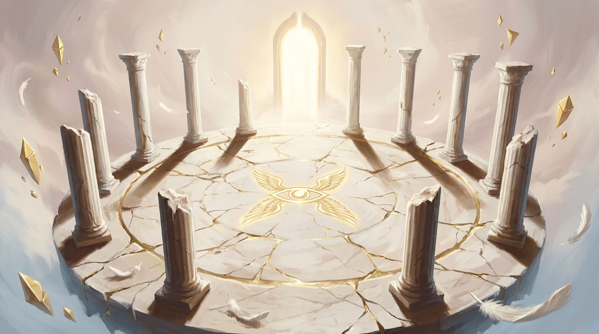
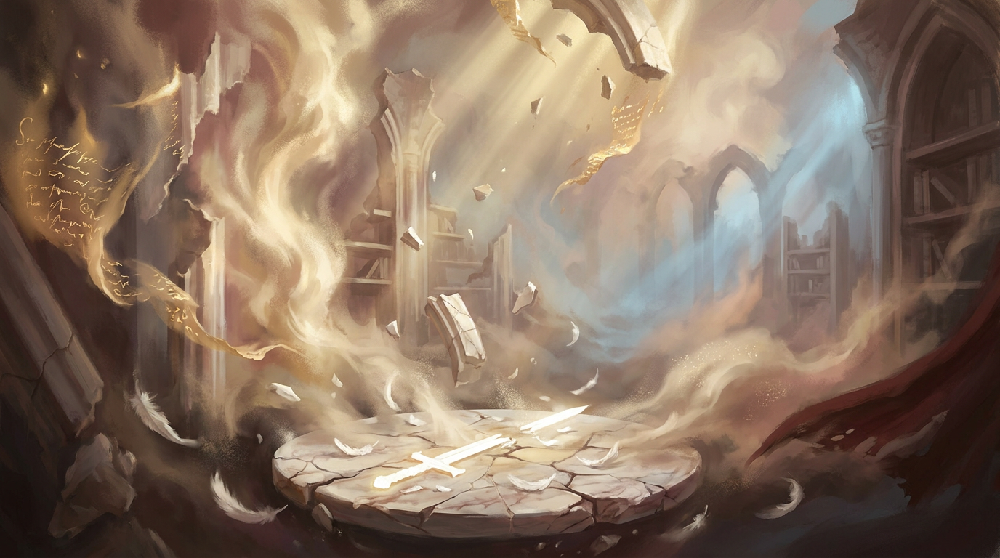
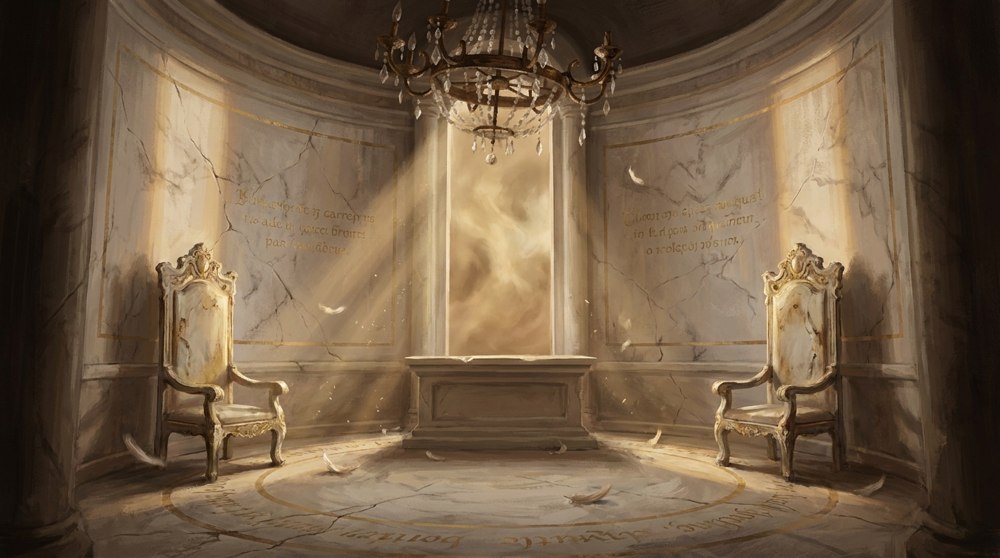

«Onore e sacrificio: non temo il dolore o la morte se servono per una causa giusta.»
— Taranor Alhagal
Taranor Alhagal è un Aasimar Protector nato sotto il sigillo di un Solar — un trovatello celeste sopravvissuto alla Notte Illuminata di Lingra, 312 anni or sono, quando un'esplosione celeste tinse di porpora il cielo del Bastione di Vetro e frantumò la Culla Angelica che lo aveva custodito per oltre 15.000 anni. Suriel, padre Solar in esilio, aveva costruito quel bozzolo d'alabastro vivo per proteggerlo dopo il sacrificio di sua madre Siri, che sigillò Kael'Seth al prezzo della propria vita.
Cresciuto a Lingra senza memoria, risvegliatosi a Nakahi tre anni or sono privo di ricordi, ha riacquisito la propria identità nella Valle di Khemet-Sut. Lì ha incontrato e perso Naelira Iset — frammento d'anima di Siri, "settima Custode" mancata — e da quel viaggio ha riportato sei compagni e l'idea di un sodalizio: nasce così la fratellanza dei Custodi dell'Equilibrio, sette spille forgiate per portare luce e ordine a Nakahi e non solo.
Tre mesi or sono è morto in battaglia contro un generale non-morto al servizio di Kael'Seth. I suoi compagni, incapaci di accettarne la perdita, hanno compiuto un rituale proibito orchestrato da Val'Sira. Taranor è tornato in vita. Ma il prezzo che gli Angeli della Cuspide hanno preteso — la Maledizione dei Custodi, vite accorciate, nessun Revivify possibile — lavora silenzioso da allora. Tre notti or sono un Emissario della Cuspide è apparso ad Anastasia D'Alfiero. È così che comincia questa oneshot.
Aasimar Protector (Solar Foundling) · Paladino Oath of Conquest + multiclasse Barbaro · Caotico Buono · Bonus di Competenza +3
CA 17 · Iniziativa +2 · PF 78 · Velocità 9 m · Dadi Vita 8
TS competenti: Costituzione +6, Saggezza +4, Carisma +7
Abilità competenti: Atletica +8, Intuizione +4, Intimidire +7, Percezione +4, Persuasione +7, Sopravvivenza +4
Sensi: Scurovisione 18 m, Divine Sense (5/giorno), Percezione passiva 14
Resistenze: danno necrotico e radioso (Celestial Resistance), danno da fuoco (Mezza Armatura della Resistenza al Fuoco)
Linguaggi: Celestiale, Comune, Gigante
Armi/Armature: Armi semplici e marziali, Armature leggere/medie/pesanti, Scudi
Giudizio degli Astri (Spadone +1) — melee +9 vs CA, [[2d6+6]] radiante.
Spiritual Weapon (spell, bonus action) — melee/spell +7, [[1d8+4]] forza.
Granata Sacra — TS Destrezza CD 15 area, [[5d6]] radiante.
Divine Smite — su colpo melee, spende slot di 1° (+[[2d8]]) o 2° (+[[3d8]]) radiante; +1d8 vs non-morti/fiend.
Cura Ferite [[1d8+4]] · Cura Maggiore [[4d4+4]] · Cura Superiore [[8d8+8]] · Cura Suprema [[10d4+20]] · Prayer of Healing [[2d8+4]].
Cantrip: Light.
1° lvl (4 slot): Bless, Cura Ferite, Command, Compelled Duel, Detect Evil and Good, Detect Magic, Detect Poison and Disease, Divine Favor, Doom of Poor Fortune, Manto del Giudizio, Protection from Evil and Good, Purify Food and Drink, Shield of Faith, Ceremony.
2° lvl (2 slot): Aid, Find Steed, Gentle Repose, Hold Person, Lesser Restoration, Locate Object, Magic Weapon, Prayer of Healing, Protection from Poison, Spiritual Weapon, Trova Cavalcatura, Warding Bond, Zone of Truth.
Strike of the Solar — 1/turno, su colpo melee/ranged: +[[1d10]] radiante (PB×/long rest, 3 usi attuali).
Radiant Soul (action, 1/long rest, 1 min) — ali luminose, velocità di volo 9 m, +CL danni radiosi 1/turno.
Healing Hands — action, tocco, [[PB d4]] cura, 1/long rest.
Light Bearer — conosce Light, CHA come abilità di lancio.
Celestial Resistance · Darkvision 18 m · Divine Health (immune malattia) · Divine Sense 5/giorno.
Imposizione delle Mani — riserva 30 PF curativi/long rest, anche per neutralizzare veleni e malattie (5 PF/uso).
Divine Smite — vedi sopra. Aura of Protection — alleati entro 3 m sommano CHA ai TS.
Channel Divinity (1/short o long rest):
• Conquering Presence — action, ogni nemico entro 9 m TS Saggezza CD 15 o frightened 1 min.
• Guided Strike — +10 a un tiro per colpire dopo aver visto il dado.
Tenets of Conquest — dottrina: spegnere la fiamma della speranza, governare con pugno di ferro, schiacciare il dissenso.
Harness Divine Power — bonus action, spende uso di Channel Divinity per recuperare 1 slot incantesimo (max metà PB, arrotondato per eccesso).
Extra Attack · Fighting Style: Blind Fighting (vista cieca 3 m).
Rage (2/giorno) — bonus action, +1 dmg melee STR, vantaggio TS/check FOR, resistenza contundente/perforante/tagliente, no spell durante.
Reckless Attack — vantaggio attacchi STR, ma nemici hanno vantaggio contro di te fino al prossimo turno.
Danger Sense — vantaggio TS DES contro effetti visibili.
Unarmored Defense — CA = 10 + DEX + CON quando senza armatura.
Martial Versatility — può sostituire fighting style quando sale di livello in Paladino.
Resilient — competente in TS Costituzione (+1 COS già applicato).
Spadone +1 "Giudizio degli Astri" — arma principale.
Elmo di Siri Alhagal — passiva Luce dell'Alba: l'elmo emette luce tenue (raggio 1,5 m), accendibile/spegnibile come bonus action. Tutte le volte che Taranor infligge qualsiasi tipo di danno, il danno viene convertito interamente in radioso (senza eccezioni).
Mezza Armatura della Resistenza al Fuoco — resistenza ai danni da fuoco.
Amuleto dei Custodi dell'Indice — lancia Bless 1/giorno come slot di 3° livello.
Dopo aver riacquisito i suoi ricordi e capito chi realmente fosse, Taranor fa forgiare sette spille; come stabilito con il Capitano Christofer Rage, ne consegna una a lui e ne trattiene una per sé. Poi raggiunge, uno a uno, i suoi compagni — Kalyx, Anyaka, Thalanel, Anastasia, Liora — e li invita a formare un piccolo sodalizio: i Custodi dell'Equilibrio. Una fratellanza di combattenti votati alla magia celestiale e divina, portatori d'ordine e di pace, che può sempre contare l'uno sull'altro.
Zaino, sacco a pelo, mess kit, fiammiferi, 10 torce, 10 razioni, borraccia, corda di canapa, corda di seta, vesti comuni, porta fortuna, porta cintura, pacco da esploratore, Spilla dei Custodi dell'Equilibrio, Simbolo Sacro, Pozione di Cura Maggiore. Monete: 8340 mo.
Tratti caratteriali. Rigido e disciplinato. Taranor osserva il codice di Ras Alhague e mantiene una condotta esemplare e una purezza di spirito senza eguali. Calmo ma pericoloso in battaglia: una furia controllata si manifesta quando scende sul campo, trasformandolo in un guerriero spietato ma non crudele.
Ideali. Equilibrio e giustizia: è devoto ai principi di Ras Alhague e, nonostante la sua rabbia interiore, cerca di portare ordine ovunque vada. Onore e sacrificio: non teme il dolore o la morte se servono per una causa giusta.
Legami. Nakahi: nonostante la sua provenienza da Lingra, ha trovato un senso di appartenenza tra la gente della Città degli Avventurieri, e giura di proteggerla. I Custodi dell'Equilibrio: la fratellanza fondata da Taranor stesso, per portare luce e speranza a Nakahi e non solo. Per loro è disposto a tutto.
Difetti. Autodistruttivo. A volte spinge se stesso troppo oltre, rischiando la vita in battaglie disperate, come se inconsciamente sentisse di dover pagare per qualcosa del suo passato. Inoltre, pur di difendere un innocente sarebbe disposto a mettere a rischio la sua vita.
Taranor in questa oneshot è chiamato a rispondere — davanti agli Alti Cieli — di un crimine che non ha commesso: la sua resurrezione orchestrata da Val'Sira. La sua rabbia non è prima cosa per la Cuspide che lo accusa, ma per scoprire che suo padre e suo fratello hanno interferito col rituale per trattenerlo, perché chi torna dimentica la Cuspide e tutto ciò che vi ha vissuto. Il dilemma della serata, per lui, non è il combattimento finale: è il momento in cui Suriel gli dice perché l'ha fatto. Non forzare quella scena. Lasciala respirare.
«Avete avuto la pietà come scusa. Noi siamo l'Ordine, non la pietà.»
— L'Emissario della Cuspide
Indegni è una avventura di Background dedicata al personaggio di Taranor Alhagal, fondatore dei Custodi dell'Equilibrio. Si svolge interamente nell'arco di una notte e di un giorno celeste, lungo il filo della maledizione che da settimane lega le anime dell'ordine al prezzo di una resurrezione che gli Alti Cieli non hanno mai approvato.
Non è una missione di caccia. Non è una missione di salvezza. È una missione di scelta. Tutto, dalla prima riga del primo atto fino al sangue dell'ultimo combattimento, lavora per portare i Custodi davanti a tre dilemmi che il Master deve aver chiari prima di sedersi al tavolo:
Questa avventura tocca, in maniera diretta, i temi del lutto, dell'amore possessivo, del libero arbitrio e del sacrificio di una vita altrui per il proprio bene. Si consiglia di concordare con il tavolo i confini emotivi (lines & veils) prima di iniziare. Il Master deve essere pronto a permettere ai giocatori di risparmiare, perdonare, o uccidere — senza punirli moralmente per la scelta opposta a quella che il Master farebbe.
Le voci che seguono raccolgono luoghi, personaggi, eventi e concetti
citati nell'avventura. Possono essere consultate liberamente dal Master
in qualunque momento e, a discrezione, condivise con i giocatori.
Tre mesi or sono, Taranor Alhagal è caduto in battaglia contro un generale non-morto al servizio di Kael'Seth. I Custodi dell'Equilibrio, incapaci di accettarne la morte, hanno compiuto un rituale proibito orchestrato da Val'Sira: hanno recuperato sei oggetti sacrileghi, hanno simulato un True Resurrection e hanno riportato Taranor al mondo dei vivi. A rituale compiuto, gli Angeli della Cuspide sono apparsi: come prezzo per non punire i Custodi sul posto, hanno preteso che le loro vite venissero accorciate. Da quel giorno, nessuno dei sei può essere riportato in vita con un semplice Revivify: l'incantesimo fallisce senza eccezioni. La maledizione, per il resto, lavora silenziosa.
Tre notti or sono, ad Anastasia D'Alfiero si è manifestato un Emissario della Cuspide. La Cuspide ha richiesto un'udienza con i Custodi e con Taranor. L'oggetto non è stato dichiarato. Anastasia sospetta che riguardi la maledizione.
Quando Taranor cadde sul campo di battaglia, la sua anima migrò alla Cuspide Angelica. Lì, per la prima volta, incontrò il proprio sangue celeste: Suriel Alhagal, il padre (un Solar), e Vaeloth Alhagal, il fratello (un Deva). Da oltre quindicimila anni piangevano la morte di Siri e l'allontanamento del figlio, scagliato a Lingra prima della fine. Quando il rituale dei Custodi cominciò a richiamare l'anima di Taranor sulla terra, padre e fratello interferirono: non per malvagità, ma per amore. Volevano trattenerlo con sé, perché chi torna in vita dimentica la Cuspide e tutto ciò che vi ha vissuto — e per loro sarebbe stato come perderlo di nuovo.
La Cuspide ha bollato la loro interferenza come un crimine in tre capi:
1) Hanno contravvenuto al libero arbitrio di un'anima.
2) Si sono mostrati ai mortali (i Custodi durante il rituale).
3) Hanno interferito con un'anima ancora non libera, cioè con i viventi, al fine di reclamare ciò che non spettava più loro.
Suriel e Vaeloth sono ora fuggiaschi. Si sono rifugiati in un dominio-ricordo costruito sulle vestigia della loro casa di quindicimila anni fa, occultato dietro la sembianza di un vecchio santuario alle porte di Atua Rua. L'Emissario propone ai Custodi un patto: cacciare i due fuggiaschi in cambio della rimozione della maledizione.
Ciò che l'Emissario non dice: i due fuggiaschi sono il padre e il fratello di Taranor. La Cuspide lo sa. Lo ha sempre saputo. Ha scelto i Custodi come carnefici perché solo loro hanno il legame con Taranor sufficiente a piegare la sua volontà. Per la Cuspide, il sangue celeste va recuperato anche col sangue celeste.
La sessione converge su una sola, vera scelta: uccidere padre e fratello per liberare l'anima dell'ordine, o risparmiarli accettando una macchia che non si laverà. La maledizione cade comunque: se i fuggiaschi muoiono, la cade per estinzione del crimine; se sopravvivono, è loro stessi a rinunciarvi spezzandola. In entrambi i casi, l'Emissario non perdona. Tornerà al termine del confronto e dichiarerà tutti i presenti indegni. È a quel punto che si gioca il vero scontro.
La Cuspide non è benevola. È funzionale. Suriel e Vaeloth hanno violato la dottrina; la dottrina prevede correzione. Se i Custodi falliscono nel cacciarli, l'Emissario li elimina personalmente — e con loro chiunque sia stato testimone. La pietà non è prevista. La pietà contamina.
| Quando | Evento |
|---|---|
| 15.000 anni fa | Siri Alhagal sigilla Kael'Seth al prezzo della propria vita. Estrae Taranor neonato dal proprio ventre e lo scaglia a Lingra. Suriel e Vaeloth, vincolati alla difesa della cripta celeste, non possono seguirlo. |
| 312 anni fa | La Notte Illuminata. La Culla Angelica si frantuma. Taranor viene risvegliato dai militiani del Bastione di Vetro. La cicatrice nasce in quel giorno. |
| 3 anni fa | Esplosione di cristalli arcani nei deserti di Damia. Taranor sopravvive privo di memoria, si risveglia a Nakahi. |
| ~6 mesi fa | Missione nella Valle di Khemet-Sut. Taranor recupera l'identità. Conosce e perde Naelira Iset. Fonda i Custodi dell'Equilibrio. |
| ~3 mesi fa | Taranor cade in battaglia contro un generale di Kael'Seth. I Custodi compiono il rituale proibito. Suriel e Vaeloth interferiscono. La Cuspide impone la maledizione. |
| Oggi — 3 notti fa | L'Emissario si manifesta ad Anastasia. Inizia l'avventura. |

L'avventura si apre nello studio privato di Anastasia D'Alfiero. È mezzogiorno. Il messaggio dell'Emissario è già stato ricevuto tre notti prima. Anastasia ha convocato i Custodi uno a uno con un sigillo personale.
Anastasia non vi accoglie in piedi. È seduta dietro la sua scrivania, davanti a una candela che non è stata accesa da nessuno, e che brucia da tre giorni senza consumarsi. Sul piano di lavoro, sette spille — le vostre, raccolte una a una — sono disposte in cerchio attorno alla fiamma. «Non l'ho convocata io», dice, e la sua voce è quella di chi non dorme da troppo. «Lei è venuta da me.»
Anastasia riferisce, con parole proprie:
Anastasia vuole due cose dai compagni: conferma di parteciparvi e onestà sul fatto che nessuno di loro sa più di quanto dichiari. Permetti scene di scambio fra i Custodi: domande sulla maledizione, ricordi del rituale, dubbi reciproci. Questo è il momento per stabilire chi, fra loro, vorrebbe sciogliere la maledizione a qualsiasi costo, e chi invece sospetta che il prezzo per scioglierla sarà più alto del prezzo di portarla.
Se Taranor è presente al tavolo, lascia che reagisca per ultimo. È lui che è stato resuscitato. È lui che porta in faccia la cicatrice del sangue celeste. Se i Custodi gli chiedono se sente qualcosa di diverso da quando il rituale è stato compiuto, lascia che il giocatore decida. Se accetta, sussurra (privatamente, fuori sessione, in chat) al giocatore: «La cicatrice ti bruciava prima. Ora non ti brucia più. Quando l'hai notato?»
Quando i Custodi sono pronti, il Capitano Rage si presenta. Indossa l'uniforme dell'Ordine, mantello scuro, la propria spilla dei Custodi al petto. Ha con sé una piccola scatola d'avorio, sigillata con cera celeste, ricevuta «in privato» dall'Emissario per il tramite di Anastasia.
«Ho fatto le mie ricerche», dice Rage, e posa la scatola sul tavolo. «I segni che porta questa cera sono autentici. Ho visto un sigillo simile una volta sola, e fu nel sottosuolo di una basilica che non si trova più sulle mappe. La scatola non è la porta: la porta è dove la cera dice di portarla. Sopra c'è scritto un nome, e quel nome è un luogo. Una volta lì, il sigillo si spezza, e la Cuspide ci risponde. È un viaggio di sola andata, almeno fino al loro permesso. Decidete adesso. Quando saliamo sulla mia nave, non c'è ritorno fino a sentenza.»
Apertura della scatola: la cera si rompe come vetro. Dall'interno si leva una colonna di luce d'avorio alta tre metri, fredda al tatto, silenziosa. Il portale è aperto.
Rage attraverserà il portale con loro, ma chiarisce una sola condizione: «Io sono il vostro Capitano. Non sono il vostro garante davanti agli angeli. Risponderete con la vostra anima per ciò che direte e farete dall'altra parte.» Rage si comporterà come osservatore: parlerà solo se interrogato direttamente, e farà valere il proprio peso politico solo se i Custodi rischiano di essere disarmati o spogliati prima dell'udienza.

Uscite dallo studio di Anastasia e attraversate il colonnato fino al cortile esterno dell'Ordine. Il sole sta tramontando dietro le sabbie di Nakahi, e il braciere centrale è acceso da poche ore: ne sale un filo di fumo che sa di mirra e di ferro. Le insegne dell'Ordine pendono dai pennoni, immobili in un'aria che dovrebbe essere mossa e non lo è. Sopra il muro di cinta, a poca altezza, è ormeggiata «La Settima»: la caracca volante del Capitano Rage. Lo scafo è in legno scuro intarsiato d'oro, la prua è scolpita nella forma di una stella a otto punte — la spilla settima dei Custodi, quella mai consegnata. Due palloni di seta cobalto la tengono sospesa. Le vele bianche, ricamate di rune, si gonfiano appena per il vento di terra.
Rage vi indica la passerella di corda. «Salite. L'angelo che ha parlato ad Anastasia non ci ha dato un altare. Ci ha dato un nome di luogo, e quel nome non è su nessuna mappa che la gente del porto sappia leggere. Ma io ce l'ho. È a tre ore di volo da qui, se il vento ci concede.»
Per gioco, questa è la prima scena in cui Rage ha veramente il palcoscenico: non come ambasciatore di Anastasia, non come Capitano-osservatore della Cuspide, ma come uomo a casa propria — sul ponte della sua nave. È l'occasione del Master per fissare i suoi tratti caratteriali prima che debba ricoprire il ruolo di scorta silenziosa nell'Atto II.
La traversata dura circa tre ore di gioco narrativo, da gestire come scena di transito: nessun combattimento programmato, ma molta possibilità di roleplay. Usatela per:

Christofer Rage ha ribattezzato la propria nave La Settima il giorno in cui Taranor gli affidò la spilla. Il nome originale era un altro, ed è oggi cancellato dalla prua a colpi di scalpello. Per Rage, la nave è la settima Custode: l'ottava persona che non è mai entrata nel cerchio, ma che li ha sempre portati a destinazione. È il motivo per cui, se uno dei sei muore davanti alla Cuspide, Rage non userà mai più quel nome.
Nessun PG può scoprire questo dettaglio in questa sessione, a meno che non chieda esplicitamente a Rage perché ha chiamato la nave così. In quel caso, descriverlo: lui non risponde a parole. Poggia la mano sulla ringhiera, e tace per il resto del viaggio.
Al termine della traversata, l'aeronave attracca su un altopiano di sabbia bianca battuta dal vento. Non c'è un edificio, non c'è un altare. C'è solo un cerchio di pietre, e al centro Rage rompe il sigillo della scatola: la cera celeste si scioglie in vapore, e il portale si apre sul terreno stesso, come una piscina di luce avorio rovesciata verso il basso. La discesa nella Cuspide comincia qui.

Il portale vi deposita su una piattaforma di marmo circolare, sospesa in un nulla d'avorio. Dodici pilastri spezzati la circondano. Al centro, inciso nel pavimento, un occhio aperto fiancheggiato da due paia d'ali. Non c'è cielo sopra di voi, non c'è terra sotto la piattaforma. Eppure respirate, e i vostri passi suonano come passi.
Davanti a voi, immobile, una figura.
L'Emissario è già lì. Non si è voltato al vostro arrivo, perché non aveva bisogno di voltarsi. Quando parla, la sua voce non viene da sotto il cappuccio: viene dal centro del cranio di chi ascolta.
L'Emissario espone il fatto con disarmante semplicità, senza alcuna inflessione:
«Due dei nostri hanno violato l'Ordine. Hanno contravvenuto al libero arbitrio di un'anima. Si sono mostrati ai mortali. Hanno interferito con i viventi al fine di reclamare ciò che non spettava più loro. Sono fuggiaschi. Si sono rifugiati in un dominio occulto dietro un vecchio santuario fuori dalle mura di Atua Rua.»
«Voi siete il prezzo della loro cattura. Andrete. Li riporterete. Quando la sentenza sarà eseguita, il laccio che pesa sulle vostre anime sarà sciolto. È un patto giusto. Voi avete contaminato. Loro hanno contaminato. Si rimedia all'uno con l'altro.»
«Chi sono i fuggiaschi?» — «Due. Un Solar e un Deva. Conoscono i vostri volti. Non conoscerete i loro fino al momento dell'esecuzione.» (Bugia di omissione.)
«Perché noi?» — «Perché il laccio è vostro. Perché conoscete il bersaglio meglio di quanto crediate. Perché la Cuspide non ama scendere dove può scendere il sangue mortale.»
«Cosa hanno fatto, di preciso, al rituale?» — «Hanno tentato di trattenere ciò che era già stato richiamato. Hanno parlato con i vostri morti senza il permesso degli Alti Cieli. Hanno tradito l'Ordine in nome di un sentimento.»
«E se rifiutiamo?» — «Allora la maledizione resta. E si approfondisce. Il rifiuto non è una violazione. È solo la chiusura di una possibilità. Una soltanto.»
«E se li risparmiamo?» — Pausa. «Risparmiare non è una opzione contemplata dal patto. Ma se l'Ordine viene comunque ristabilito, il patto resta valido.» (Cioè: se la maledizione si scioglie comunque, va bene. Cosa che non dichiara è che alla Cuspide questo non basterà.)
Insight DC 22 — l'Emissario sta nascondendo qualcosa. Non sta mentendo: sta semplicemente non dicendo. Specificamente, sta omettendo l'identità dei fuggiaschi.
Religion DC 20 — un Emissario di questo rango non viene mandato sulla pelle di mortali senza un secondo fine. Storicamente, gli Emissari sono gli esecutori, non i delegatori.
L'Emissario apre un secondo portale, identico al primo. Indica un punto preciso del dominio: «Apparirete sulla soglia del santuario. Il dominio dei fuggiaschi è già stato isolato. Non possono fuggire. Non potete fuggire neanche voi, fino a sentenza.»
Il portale doveva depositare i Custodi davanti al santuario di Atua Rua, struttura abbandonata di pietra grezza in piena steppa. I fuggiaschi sabotano il punto di arrivo. Quando i Custodi attraversano, la luce d'avorio si tinge per un istante di un caldo rosa polveroso — il colore della pelle dei tramonti di Lingra — e i Custodi passano oltre il santuario. Si ritroveranno dentro il dominio-ricordo: la Casa dei Padri.
Christofer Rage, se presente, viene respinto dal sabotaggio: arriva al santuario come previsto e si ritrova, lui solo, fuori dal dominio. Non potrà entrare. Non potrà chiamarli. Si siede di fronte al portale spento, in attesa.
Un dominio-ricordo: non un piano vero, non un'illusione, qualcosa che sta nel mezzo. È la casa in cui Siri, Suriel e Vaeloth vissero quindicimila anni fa, prima della guerra contro Kael'Seth. Il dominio non corrisponde a un luogo geografico: corrisponde a una memoria, condivisa da chi vi è cresciuto. Quando Taranor vi entra, riconosce ogni stanza prima di vederla. È così che i ricordi mascherati dalla Culla Angelica cominciano a tornare.

Ogni stanza che Taranor attraversa per la prima volta gli restituisce un ricordo della propria infanzia celeste: scene di pochi secondi, sensoriali, frammentarie. Il giocatore di Taranor riceve, all'ingresso di ogni stanza, un breve testo descrittivo (cartoncini preparati dal Master). I ricordi non sono opzionali: arrivano. Taranor non può rifiutarli.
Gli altri Custodi non vedono i ricordi. Vedono però Taranor irrigidirsi, fermarsi, piangere, ridere, sussurrare nomi che non hanno mai sentito. Il dominio sta lavorando su di lui, e il sabotaggio dei fuggiaschi ha esattamente questo scopo: convincerlo a fermarsi prima di doverli uccidere.
Una sala circolare di marmo ivory, dodici metri di diametro. Al centro, un focolare di fiamma bianca che non emette calore. Sei seggi di pietra disposti intorno. Sul pavimento, parole in lingua celeste antica appena visibili: «Qui ci si scalda quando si torna.»
Ricordo di Taranor — Stanza 1: Sei piccolo. Stai imparando a camminare. Una mano enorme, bianca, ti regge per la nuca. Una seconda mano, più piccola, ti regge la pancia. Ridi. Qualcuno ride sopra di te. La luce della fiamma bianca ti scalda anche se non ha calore.
Eventi: Al centro del focolare, sospeso, un piccolo medaglione d'argento con incisa una runa celeste. Religion DC 16: è il sigillo familiare degli Alhagal. Se Taranor lo prende, riceve il primo flash: il suono di una culla.
Una stanza più piccola, a est. Una culla d'alabastro rotta a metà sta al centro. Attorno, in cerchio perfetto, dodici giocattoli d'avorio e silver-blue: cavallini, soldati piccoli, una piccola spada di legno, un libro con copertina ricamata.
Ricordo — Stanza 2: Nella culla c'è qualcuno. Sei tu. Hai forse un anno. Una voce di donna canta sopra di te, in una lingua che non comprendi ma che ti consola. La voce non ride mai. Quando ti volti nel sonno, vedi due ali bianche piegate sopra di te come un tetto. Non sei mai stato così tranquillo. Non sei mai stato così solo.
Se un Custode tocca la culla d'alabastro, sente la voce di Siri (madre di Taranor) dirgli: «Lascialo qui. È casa sua. Tu hai già fatto la tua parte.» La voce è benevola, calma. Saving Throw Wis DC 17: chi fallisce, per le prossime ore, prova un'inerzia emotiva intensa, e ogni volta che tenta di convincere Taranor ad andarsene ottiene svantaggio alla prova di Persuasione. Chi supera il tiro, percepisce nettamente che la voce non è di Siri, ma di Suriel che imita Siri.
A ovest. Una sala con scaffali di marmo che salgono per quattro piani, tutti contenenti libri di luce: tomi senza pagine, ma fogli sospesi in formazione. Al centro, una nicchia di lettura circolare con una sedia rotta e un libro aperto sulla pagina centrale.
Ricordo — Stanza 3: Hai forse cinque anni. Sei seduto in grembo a un ragazzo più grande di te. Ha le ali blu-argento. Ti sta insegnando a leggere le rune dei Sigilli. Quando sbagli, non si arrabbia. Ride. Hai un fratello. Si chiama Vaeloth. Non lo dimentichi mai più, finché non smetti di esistere per quindicimila anni.
Eventi: Il libro aperto sul leggio è un diario di Vaeloth. Le pagine recenti riportano frammenti come: «Quindicimila anni che lo aspetto. Quando l'ho rivisto era già un uomo. Aveva la sua cicatrice. Non mi ha riconosciuto. Padre dice che era previsto. Padre dice molte cose.»
Un secondo passaggio: «Non vogliamo ferirli. Vogliamo solo che lui torni. Loro non sanno cosa hanno richiamato indietro. Una vita di mortali, fra le mortali, dopo aver visto la Casa. È una crudeltà che non sopporterò.»
Una Investigation DC 14 sull'ultima pagina rivela una calligrafia diversa, scritta sopra quella di Vaeloth: «Lui non è di nessuno di noi. Non più. Lascialo andare. — V.» È Vaeloth che, in privato, sta dubitando del piano. Questo apre la possibilità che, durante il confronto finale, possa essere convinto a rinunciare, anziché ucciso.
A nord, sotto un soffitto rotto da cui sale un albero d'argento dalle foglie di vetro. Le radici emergono dalle lastre del pavimento. Sul tronco, sette incisioni: sei sono nomi di Custodi (Taranor, Kalyx, Anyaka, Thalanel, Anastasia, Liora). La settima è stata raschiata via.
Ricordo — Stanza 4: Sei piccolo, tre anni. Stai seduto sotto un albero d'argento che hai visto crescere in una settimana. Tua madre — la chiami così perché è la parola che usi, non perché tu sappia cosa significa — è inginocchiata a pochi passi. Ti dice una cosa che non capisci: «Il tuo nome sarà inciso qui. E il tuo nome inciderà altri nomi. Saranno la tua famiglia, dopo di noi.»
Il settimo nome raschiato via era Naelira Iset. Il dominio-ricordo non è solo di Suriel e Vaeloth: condivide qualcosa della radice celeste di Siri. La settima spilla, quella che Taranor non ha mai consegnato a nessuno, dovrà passare a Naelira il giorno in cui lei tornerà. Suriel lo sa. Vaeloth lo sa. Hanno raschiato il nome perché sanno che, se Taranor lo legge, non avrà più dubbi sulla scelta.
Se Taranor passa Investigation DC 18 sul tronco, il nome riappare per pochi secondi. È il momento in cui il giocatore deve decidere se condividere l'informazione con gli altri Custodi.
A sud-ovest. Una sala lunga, alta, fredda. Rastrelliere di armi: lance di luce, spade radianti, scudi d'avorio incisi con bilance. Al fondo, una statua inginocchiata, scolpita nella pietra, alta tre metri: un guerriero alato, elmo posato a terra, sguardo basso. Non è una statua qualsiasi: è il monumento funebre che Suriel ha edificato a Siri il giorno in cui pensava di aver perduto anche il figlio.
Ricordo — Stanza 5: Hai sei anni. Tuo padre è in ginocchio davanti alla statua di tua madre. Piange senza fare rumore. Non sapevi che gli angeli potessero piangere. Quando si accorge che sei entrato, non si alza. Ti tende una mano. La sua mano è enorme. Lui è enorme. Tu lo ami con tutto te stesso. Lui ti chiede, sottovoce: «Non andartene mai, va bene?»
Ai piedi della statua, un piccolo medaglione: lo stesso disegno del medaglione della Stanza 1, ma con incise tre figure stilizzate (uomo, donna, bambino). Il giocatore di Taranor può raccogliere il pegno: se lo porta con sé fino al confronto finale, ottiene vantaggio al primo tiro di Persuasione contro Suriel. Suriel riconosce l'oggetto e perde, per un istante, la propria postura.
La stanza più profonda, a nord, accessibile solo dopo che il dominio ha "accettato" Taranor (cioè, dopo almeno tre ricordi sbloccati). Una soglia di luce. Oltre, una piccola stanza circolare con un altare nudo, e davanti all'altare due troni vuoti. Le sedie guardano l'altare. Non si guardano fra loro.
Suriel e Vaeloth sono lì. In attesa. Non attaccheranno per primi.

Vaeloth parla per primo. Il suo tono è gentile, supplichevole, addolorato. Suriel non parla finché Vaeloth non ha finito. Quando parla, è duro, paternale, non negoziabile.
Vaeloth, voce dolce: «Fratello. Ti aspettavamo. Non così, è vero. Ma sempre. Quindicimila anni ti abbiamo aspettato, e quando finalmente ti abbiamo trovato di nuovo era nel momento in cui stavi tornando alle vostre piccole mortali. Capisci che non potevamo lasciarti? Tu non sai, perché chi torna dimentica. Tu non sai cos'è la nostra Casa.»
Suriel, voce ferma: «Tuo fratello è tenero. Io lo sono meno. Quello che lui ti chiede col pianto, io te lo chiedo con la voce del sangue: resta. Non sei nato per la vita che hai scelto. Sei nato qui. Tua madre ti scagliò a Lingra perché non aveva tempo per discutere. Non perché tu meritassi quella vita. Ora il sangue ha il tempo di parlarti. Ascoltaci.»
I Custodi possono affrontare la scena in tre modi: combattere (Suriel attacca solo se viene attaccato; Vaeloth difenderà il padre), convincere (skill challenge), o spezzare emotivamente (richiesto Taranor in scena).
Obiettivo: ottenere che Suriel e Vaeloth rinuncino a trattenere Taranor e accettino di lasciarsi giudicare dalla Cuspide (o, in alternativa, lascino i Custodi liberi e si arrendano in silenzio).
Successi richiesti: 5 successi prima di 3 fallimenti. Difficoltà DC 17 (Suriel) e DC 14 (Vaeloth). Vaeloth può cedere indipendentemente da Suriel.
Skill ammesse: Persuasion, Insight, Religion, History, Performance (canto celeste).
Bonus narrativi:
Esito skill challenge:
Stat block completi in Appendice A. In sintesi:
Suriel e Vaeloth non vogliono uccidere i Custodi. Vogliono trattenerli finché Taranor non ammetta di voler restare. Tutti gli incantesimi sono calibrati per incapacitare: Hold, Sleep, Calm Emotions, attacchi a danno non letale (Suriel può scegliere di ridurre a 1 PF anziché uccidere). Se un Custode cade, Vaeloth lo stabilizza alla fine del turno. La regola di tavolo: nessun Custode muore in questo scontro a meno che il giocatore lo decida narrativamente.
Se invece i Custodi uccidono uno dei due, gli effetti sono definitivi. Suriel e Vaeloth sono fuori dal ciclo della Cuspide (sono fuggiaschi). Non possono essere riportati indietro.
Quando il combattimento si chiude (per vittoria del party, per skill challenge, per resa), il dominio comincia a dissolversi. I muri della casa diventano traslucidi. La luce si fa più diretta. La maledizione si scioglie. Ogni Custode lo sente come una catena sottile che cade dal collo. Per un solo istante, tutti — anche quelli morti, se ne hanno — possono respirare di nuovo.
A) Suriel e Vaeloth si arrendono: entrambi rinunciano alla loro pretesa. La maledizione cade. Suriel chiede a Taranor un'ultima cosa: «Non dimenticarci. Anche se devi dimenticarci.»
B) Suriel muore, Vaeloth sopravvive: Vaeloth piange in silenzio sul corpo del padre. Non maledice i Custodi. Si volta a Taranor e dice: «Hai scelto. Mi inchino. Non ho più nulla da rinfacciarti. Sono il tuo Vaeloth, ancora. Lo sarò sempre.»
C) Vaeloth muore, Suriel sopravvive: Suriel non parla. La sua espressione si rompe per la prima volta. Quando i Custodi gli si avvicinano, mormora: «Quindicimila anni per riportarvi entrambi a casa. Adesso mio figlio è qui, e mio figlio non c'è più.»
D) Entrambi muoiono: il silenzio. La maledizione cade. Taranor è solo davanti a due cadaveri di angeli. Le ali di Suriel restano aperte, come se ancora cercassero di abbracciarlo.
Il dominio si è quasi del tutto dissolto. I muri sono colonne di polvere d'avorio. Sotto i piedi dei Custodi resta soltanto un disco di marmo. È in questo momento che il portale si riapre, e l'Emissario varca la soglia.
L'Emissario guarda — se di "guardare" si può parlare, quando non hai volto. Si ferma a tre passi dai Custodi. Tace per un tempo lungo. Quando parla, parla a tutti e a nessuno.
«Avete avuto la pietà come scusa. Noi siamo l'Ordine, non la pietà. Avete contaminato due volte. Una con un rituale che non vi era stato concesso. Due, ora, lasciando vivere ciò che la Cuspide aveva condannato. Non c'è terza occasione. Siete tutti, in questa sala, indegni.»
«Vi rimuovo. Per pulizia. Per ordine.»
L'Emissario attacca indipendentemente dall'esito della scelta finale. Anche se i Custodi hanno ucciso entrambi i fuggiaschi e gli hanno consegnato i corpi, l'Emissario considera la presenza dei Custodi in questa sala come una macchia, perché solo loro hanno visto la verità del piano della Cuspide e potrebbero raccontarla. La Cuspide non lascia testimoni vivi.
Se Vaeloth è ancora vivo, attaccherà l'Emissario al fianco dei Custodi. Se Suriel è ancora vivo, si frapporrà fra i Custodi e l'Emissario gridando: «Non i miei figli. Mai più i miei figli.»
Emissario della Cuspide — CR 22, custom (vedi Appendice A). Quattro azioni leggendarie, immunità a charm/fear, resistenza a non-radiante. Casta come un chierico di 18° livello.
Vaeloth vivo: combatte come Deva con i Custodi. Si concentra su cura e supporto.
Suriel vivo: combatte come Solar al fianco di Taranor. Affianca Taranor come un guerriero ai lati del proprio figlio. Se Taranor scende sotto metà PF, Suriel si frappone e si fa colpire (può anche morire qui — la sua morte ora spezza definitivamente ogni residuo di legame celeste possessivo di Taranor).
Christofer Rage: se è ancora fuori dal portale al santuario, in questo momento il dominio collassa anche sul lato esterno: il portale si riapre e Rage può entrare. Arriva al round 3. Combatte come Veteran + (CR 7) con un'aura di Bless sui Custodi entro 20ft.
Quando l'Emissario cade in ginocchio, non si lamenta. Non implora. Solleva il viso senza viso verso il cielo che non c'è e dice, in un tono che non è di sconfitta ma di referto: «Riportato. Per ordine.»
Il corpo si dissolve in placche d'oro polverizzato. La luce d'avorio si spegne. Sotto i piedi dei Custodi, per la prima volta da ore, tornano polvere, sabbia, terra. Siete fuori dal santuario di Atua Rua. Il sole sta tramontando. Christofer Rage, se è con voi, si lascia cadere a sedere senza una parola. Se è ancora fuori, lo vedete dall'altra parte di un cerchio di pietre, ed è il primo a venirvi incontro.
La maledizione è caduta. Revivify torna a funzionare. Il laccio è sciolto. Tutti i Custodi che la portavano, in questo istante, lo sanno. È un sollievo fisico, simile al togliere un'armatura dopo settimane di marcia.
La Cuspide non ha rinunciato. Ha solo perso questo round. L'Emissario non era un essere insostituibile: era un funzionario. La Cuspide ne nominerà un altro. Non è chiaro quando, né a quale costo. Quanto è chiaro: i Custodi dell'Equilibrio sono ora annotati nei registri del cielo come una macchia non sterilizzata. Future sessioni di lore potranno costruire sopra a questo elemento (gli angeli "civili" che ora trattano i Custodi con freddezza, gli ordini divini che non concedono più commune facili, ecc.).
962Taranor ha visto la propria infanzia. Sa, ora, di cosa parlava la cicatrice. Sa anche, dolorosamente, che la sua madre — pure morta da quindicimila anni — è stata l'origine sia della sua salvezza che dell'oblio di Naelira; e che suo padre, ammirato in ricordo, era pronto a togliergli la libertà per amore. Taranor esce da questa sessione con una promessa in più alla propria coscienza: «Non amerò mai così. Mai più.»
964Celestiale di taglia Grande (Solar potenziato), neutrale buono · Sfida 21 (33.000 PE)
Classe Armatura 22 (armatura naturale + parata di luce)
Punti Ferita 305 (22d10 + 184)
Velocità 12 m, volare 45 m
Tiri Salvezza Int +14, Sag +15, Car +17
Abilità Percezione +15, Intuizione +15, Persuasione +17, Religione +14
Resistenze ai Danni da incantesimo; perforanti, contundenti, taglienti da attacchi non magici
Immunità ai Danni necrotici, radianti, da veleno
Immunità alle Condizioni affascinato, sfinito, atterrito, frastornato, paralizzato, pietrificato, avvelenato
Sensi Visione Cieca 36 m, Visione Reale 36 m, Percezione passiva 25
Linguaggi tutti, telepatia 36 m
Gli attacchi di Suriel sono magici. Quando colpisce con un'arma, l'arma infligge 6d8 danni radianti extra (già inclusi nel danno).
CD incantesimi 25. A volontà: detect evil and good, flying, invisibility (solo se stesso). 3/giorno ciascuno: commune, control weather, dispel evil and good. 1/giorno ciascuno: resurrection, plane shift, holy aura.
Suriel ha vantaggio ai tiri salvezza contro incantesimi e altri effetti magici.
Quando Taranor scende sotto metà PF in vista di Suriel, Suriel può usare la propria reazione per teletrasportarsi a fianco di Taranor entro 9 m e assorbire tutto il danno residuo del prossimo colpo subito da Taranor. Una volta per scontro.
Azioni — Multiattacco: Suriel esegue due attacchi con Spadone Radiante.
Attacco con arma da mischia: +15 al colpire, portata 1,5 m, un bersaglio. Colpito: 13 (2d6 + 8) danni taglienti più 27 (6d8) danni radianti.
Una volta per turno, Suriel può evocare e lanciare la propria spada come azione bonus. Attacco con arma a distanza: +15 al colpire, gittata 36 m, un bersaglio. Colpito: 13 (2d6 + 8) danni taglienti + 27 (6d8) danni radianti. La spada torna in mano a inizio del turno successivo.
Suriel emette un'onda di luce in un cono di 18 m. Ogni creatura nel cono deve effettuare un tiro salvezza su Destrezza con CD 23, subendo 44 (8d10) danni radianti con un fallimento, o metà con successo. Le creature non-radianti subiscono svantaggio al tiro.
Suriel sceglie una creatura entro 18 m. Bersaglio: tiro salvezza su Carisma CD 25 o subisce 35 (10d6) danni psichici e diventa incapacitato fino alla fine del prossimo turno di Suriel. Suriel userà questa azione solo contro Taranor.
Azioni Leggendarie: Suriel può effettuare 3 azioni leggendarie. Una sola alla volta, solo alla fine del turno di un'altra creatura. Recupera all'inizio del proprio turno.
Teletrasporto. Suriel si teletrasporta entro 36 m a un punto a sua scelta che può vedere.
Spada (costa 2 azioni). Suriel effettua un attacco con Spadone Radiante.
Sguardo del Padre (costa 2 azioni). Suriel fissa una creatura entro 18 m. Bersaglio: tiro salvezza su Saggezza CD 21 o, se ostile a Taranor, attacca con svantaggio per il prossimo round.
Celestiale di taglia Media (Deva potenziato), legale buono · Sfida 13 (10.000 PE)
Classe Armatura 19 (cotta di scaglie d'argento + sigilli protettivi)
Punti Ferita 198 (18d8 + 117)
Velocità 9 m, volare 27 m
Tiri Salvezza Sag +12, Car +11
Abilità Intuizione +12, Medicina +12, Persuasione +11, Religione +9
Resistenze ai Danni radianti; perforanti, contundenti, taglienti da attacchi non magici
Immunità alle Condizioni affascinato, sfinito, atterrito
Sensi Visione nel Buio 36 m, Percezione passiva 19
Linguaggi tutti, telepatia 36 m
Gli attacchi di Vaeloth sono magici. Quando colpisce con un'arma, l'arma infligge 4d8 danni radianti extra (già inclusi nel danno).
CD incantesimi 19. A volontà: detect evil and good. 3/giorno: cure wounds (4° liv), sanctuary, shield of faith, calm emotions. 1/giorno: commune, raise dead.
Vaeloth ha vantaggio ai tiri salvezza contro incantesimi.
Se Suriel viene ridotto sotto metà PF in vista di Vaeloth, Vaeloth può usare la propria reazione per lanciare gratuitamente shield of faith e sanctuary su Suriel.
Azioni — Multiattacco: Vaeloth effettua due attacchi con Mazza d'Argento.
Attacco con arma da mischia: +10 al colpire, portata 1,5 m, un bersaglio. Colpito: 9 (1d8 + 5) danni contundenti più 18 (4d8) danni radianti. Se il bersaglio è ostile a un alleato di Vaeloth, il bersaglio deve effettuare un tiro salvezza su Saggezza CD 19 o essere spaventato fino alla fine del proprio prossimo turno.
Vaeloth tocca un'altra creatura. Il bersaglio recupera 50 PF e viene liberato da qualunque maledizione, malattia, veleno, cecità o sordità.
Vaeloth dispiega le proprie ali e copre un alleato entro 1,5 m. Per il prossimo round, ogni attacco contro l'alleato è effettuato con svantaggio, e Vaeloth subisce metà dei danni inflitti all'alleato.
Celestiale di taglia Grande (boss custom), legale neutrale · Sfida 22 (41.000 PE)
Classe Armatura 23 (placche di luce stratificate)
Punti Ferita 340 (24d10 + 200)
Velocità 0 m, volare 60 m (stazionario)
Tiri Salvezza Des +14, Sag +16, Car +15
Abilità Percezione +16, Intuizione +16, Religione +13
Resistenze ai Danni contundenti, taglienti, perforanti, da fuoco, da freddo, da fulmine, psichici, necrotici
Immunità ai Danni radianti, da veleno
Vulnerabilità ai Danni nessuna — ma vedi tratto "Crepa nell'Ordine"
Immunità alle Condizioni affascinato, atterrito, sfinito, frastornato, paralizzato, avvelenato, prono, trattenuto
Sensi Visione Reale 60 m, Percezione passiva 26
Linguaggi tutti, comprende ogni intenzione, telepatia infinita
Gli attacchi infliggono 7d8 danni radianti extra (già inclusi).
Vantaggio ai tiri salvezza contro magia. Gli incantesimi di 5° livello o inferiore lanciati contro l'Emissario falliscono automaticamente a meno che il caster non superi un check su Carisma CD 25.
Se durante lo scontro un Custode pronuncia ad alta voce una delle seguenti parole — «indegno», «pietà», «Naelira», «Siri» — l'Emissario perde la propria immunità alle condizioni per un round. Il giocatore deve dichiarare apertamente la parola; non è un check.
L'Emissario può imporre questa condizione tramite alcune azioni. Una creatura indegna: non recupera PF da fonti di cura per 1 minuto; ha svantaggio ai tiri salvezza contro incantesimi divini; non può lanciare incantesimi di 6° livello o superiore. La condizione si rimuove con greater restoration o quando l'Emissario cade.
Azioni — Multiattacco: tre attacchi con Crescente di Luce, oppure uno e Word of Judgment.
Attacco con arma da mischia: +14 al colpire, portata 3 m, un bersaglio. Colpito: 14 (2d6 + 7) danni taglienti più 31 (7d8) danni radianti. Tiro salvezza su Costituzione CD 23 o il bersaglio diventa Indegno (vedi sopra).
L'Emissario pronuncia una sentenza. Tutti i nemici entro 18 m in una linea cruciforme devono effettuare un tiro salvezza su Saggezza con CD 24 o subiscono 66 (12d10) danni radianti e diventano Indegni; metà danno e niente Indegno con successo.
Quando l'Emissario scende a metà PF, può usare la propria azione per attivare la Sanzione. Tutti i nemici a vista subiscono 1d4 livelli di affaticamento (distribuiti a scelta dell'Emissario tra le creature; max 1 per creatura).
Le quattro ali a placche dell'Emissario possono essere usate come reazione: quando un bersaglio dichiara di curare un alleato entro 9 m, l'Emissario impone svantaggio al tiro di cura.
Azioni Leggendarie: 4 per round, una alla volta, solo a fine turno di un'altra creatura.
Riposizionamento (1). Vola fino a 18 m senza provocare opportunità.
Attacco (2). Effettua un attacco con Crescente di Luce.
Sigillo (2). Pronuncia un sigillo. Un bersaglio entro 18 m deve effettuare tiro salvezza su Carisma CD 23 o non può lanciare incantesimi fino alla fine del prossimo turno dell'Emissario.
Voce dell'Ordine (3). L'Emissario impone Indegno a un bersaglio entro 18 m senza tiro salvezza. Una sola volta per scontro.
Lo scontro con l'Emissario, per un party di 6 PG di livello 8-11 senza supporto NPC, è classificabile come Deadly+ e progettato per essere drammatico ma vincibile solo se i Custodi sfruttano i bonus narrativi (Suriel e Vaeloth ancora vivi, Christofer Rage al loro fianco, parole-chiave della "Crepa nell'Ordine"). È intenzionale: il Master deve incoraggiare la creatività e premiare i tentativi di sfruttare il lore della casa per indebolire l'Emissario.
Se il tavolo è particolarmente esperto o se hanno gestito perfettamente Atto IV con tutti gli alleati vivi, considera di rimuovere una azione leggendaria all'Emissario per round (passa da 4 a 3) per evitare TPK.
Le mappe sono fornite in scala 5ft/quadretto e sono pensate per VTT (Foundry, Roll20) come grid maps. Per il gioco da tavolo è sufficiente stamparle in A3 o proiettarle su monitor centrale.
La Casa dei Padri ha confini geometricamente impossibili: le stanze non si "incastrano" se misurate. Questo è intenzionale. Se i giocatori notano l'incongruenza, conferma: «È un ricordo, non un edificio.»
| Oggetto | Provenienza | Rarità / Effetto |
|---|---|---|
| Medaglione degli Alhagal | Stanza 1 | Uncommon · vantaggio ai tiri di Religione su materia celeste. |
| Diario di Vaeloth | Stanza 3 | Lore item · contiene frammenti di rituali celesti utilizzabili come component magico in rituali futuri. |
| Pegno di Suriel | Stanza 5 | Rare · una volta al giorno, vantaggio al primo tiro di Persuasione contro una creatura celeste. |
| Foglia d'Argento | Stanza 4 (giardino) | Uncommon · può essere consumata per lanciare gratuitamente Sanctuary una volta. |
| Oggetto | Da chi | Effetto |
|---|---|---|
| Spadone Radiante di Suriel | Suriel | Very Rare · arma a due mani +2, infligge 2d8 danni radianti extra. Quando impugnata da un Aasimar di sangue celeste reale (Taranor), 4d8. |
| Mazza delle Preghiere | Vaeloth | Rare · arma da mischia +1, una volta al giorno il portatore può imporre svantaggio a un tiro salvezza nemico. |
| Crescente di Luce | Emissario | Legendary · attunement. Polearm +3, infligge 4d8 danni radianti. Una volta al giorno: Word of Judgment (3d10 radiante in cono di 9 m). |
| Reliquia delle Quattro Ali | Emissario | Legendary · attunement. Dona vantaggio ai tiri salvezza contro charm/fear. 3/giorno: Sanctuary. |
Tutto questo manuale è scritto attorno a una sola idea: l'amore senza libertà non è amore. Suriel ha amato Taranor abbastanza da volerlo trattenere. Siri ha amato Taranor abbastanza da costruirgli Naelira come strumento. I Custodi hanno amato Taranor abbastanza da richiamarlo indietro contro l'ordine del cielo. La sessione "Indegni" prende tutti questi amori, li mette in una stanza, e chiede ai giocatori di scegliere quale di loro è disposto a fare lo stesso errore.
Buon gioco, e che il tavolo abbia il coraggio di non scegliere il modo facile.
Una sequela di tracce YouTube per accompagnare le ~3 ore di sessione.
Da mettere in coda nell'ordine indicato.
Celestial Memories — Tabletop RPG Music (emotional string and choir)
Ambient celestiale con cori e archi malinconici. Per l'apparizione dell'Emissario ad Anastasia e l'incontro coi Custodi che capiscono cosa sta arrivando.
youtube.com/watch?v=hjMhI4nTSHY
Airship Armada — 1 Hour of Combat Music (Loop)
Caracche volanti, vento d'alta quota, accumulo di tensione. Reggi questo durante il viaggio del Capitano Rage e fino all'Aula della Cuspide.
youtube.com/watch?v=Qyo9eAdiCas
AMONG ANGELS — Female Vocal Fantasy Music Mix
Orchestra con voci femminili eteree, dolcemente luminoso e malinconico. Il pezzo "centrale" emotivo, quello che fa funzionare le stanze ricordo di Siri/Suriel/Vaeloth.
youtube.com/watch?v=QnNHzDfrsbQ
Fantasy Film Music — Father And Son (Adrian von Ziegler)
Per il dialogo padre/fratello/figlio.
youtube.com/watch?v=hUfcmcUgrZc
SACRIFICE — Epic Sad Tragic Orchestral Mix
Se si arriva al punto di rottura e Vaeloth cede prima del padre, passa qui per chiudere l'atto sul peso della scelta.
youtube.com/watch?v=eE8bk8NJqbE
ANGELIC WAR — Epic Battle Music Mix (Book of Enoch)
Il vibe del Solar che esegue la sentenza della Cuspide. Cori epici, percussioni pesanti, dramma celeste.
youtube.com/watch?v=hl2F1FCkY_I
Angels And Demons — D&D Epic Battle Music 1h (backup se finisce prima)
youtube.com/watch?v=uSs3UQDsPLU
CROWNED BY TIME — Emotional & Epic Fantasy Orchestral Mix
Per lo scioglimento della maledizione, i ringraziamenti, il bilancio finale di chi è rimasto e cosa hanno perso.
youtube.com/watch?v=ohGo1CH3tYU
Apri questo URL nel browser e parte la sequenza completa in autoplay senza dover passare manualmente tra i video: